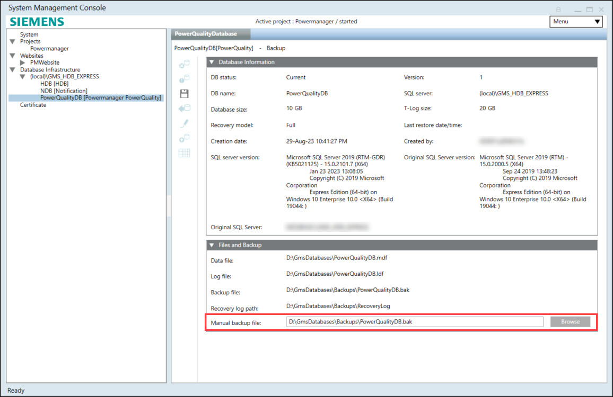
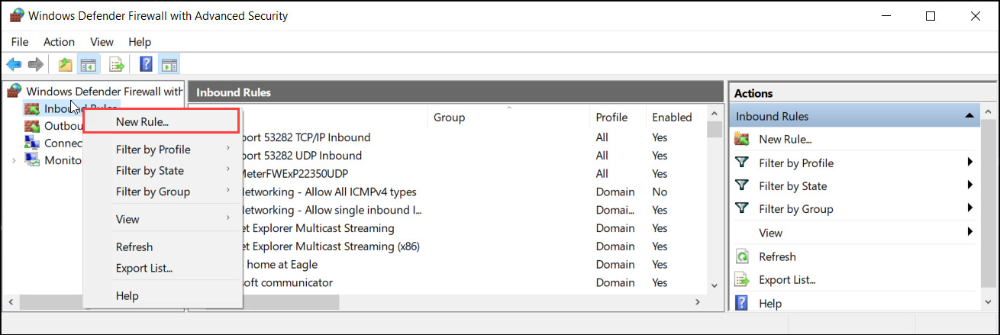
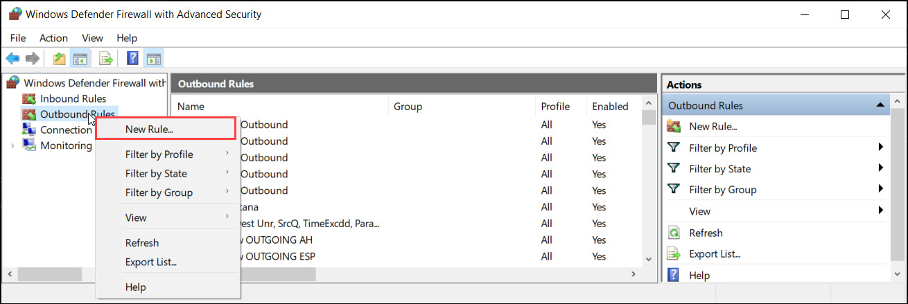
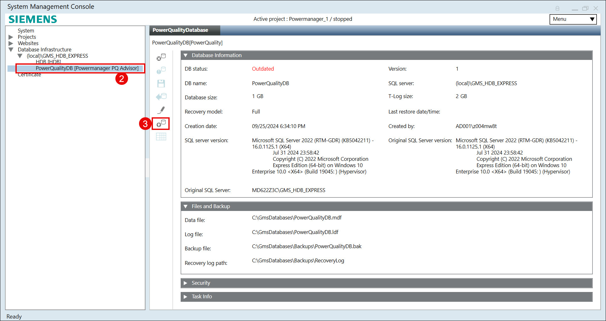
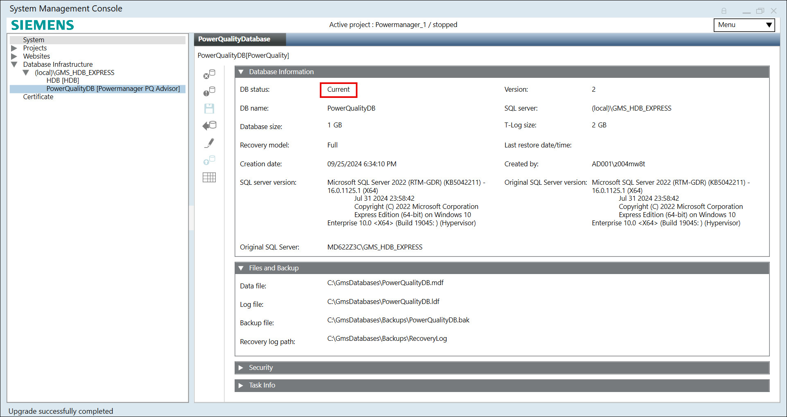

Additional PowerQuality Database procedures
This section provides additional procedures related to the PowerQuality Database in Powermanager.
Restore a PowerQuality Database Backup
- SQL Server is available.
- A named instance is available on the SQL Server.
- In the SMC tree, select Database Infrastructure > [SQL Server Name].
NOTE: Do not select an existing Powermanager Database. - Click Restore and select Restore Powermanager PowerQuality Database.
- Navigate to Database Information expander and enter a DB Name (no special characters or spaces).
- Navigate to Files and Backup expander, and select below files:
- Data file: C:\[MyProjectPQDB]\ [DBname].mdf
- Log file: C:\[MyProjectPQDB]\ [DBname].ldf
- Backup file: C:\[MyProjectPQDB]\Backups\[DBname].bak
- Recovery log path: C:\[MyRevoveryPath]\RecoveryLog
- Restore file: Select the PowerQuality Database backup (.bak) file, you want to restore.
- Navigate to Security expander, and select owner for PowerQuality Database.
- Click Save
 .
. - Click Yes to restore a backup file.
- The PowerQuality Database is restored and displayed in the SMC tree.
- The PowerQuality Database is started automatically following successful restore.
- Once restore is complete, link the restored database to the project. For more information, refer Linking PQ Web Application and PowerQuality Database to the project.
Manual Backup of PowerQuality Database from SMC
You want to make a manual backup of the PowerQuality Database using SMC.
- Ensure that your target directory has enough space, as the PowerQuality Database requires large space. The maximum supported database size is 250 GB.
- It is recommended that you store a copy of the backup on a different storage medium if you back up your data on your local computer. This prevents overflow of your local hard disk. The backup can be incomplete or faulty if insufficient storage space is available during the backup. Therefore, it is recommended that you repeat the backup.
- Ensure that a PowerQuality Database is available.
- In the SMC tree, select Database Infrastructure > [SQL Server Name] > [PowerQuality Database name].
- Click Backup
 .
. - Select the Files and Backup expander.
- Click Browse for Manual backup file and select the folder for backup.

- Click Save.
- Click Yes to create the backup file.
- The Task Info Expander shows the backup status.
Creating Inbound and Outbound Rule for Remote Database
For a complete list of TCP and UDP ports that you should add to the server firewall and any network firewalls between the server and clients, distribution participants and the server and field panels for a safe system operation, see Cybersecurity Guidelines document.
- Open system where you wish you create a remote database.
- Open Windows Defender Firewall with Advanced Security.
- Right-click on Inbound Rules and select New Rule.

- In the wizard, configure the following:
a. For Rule Type, select Port, and click Next >.
b. For Protocol and Ports, enter below port numbers one by one
- select TCP and enter Specific local ports as 1433,
- select UDP and enter Specific local ports as 1434
c. Click Next >.
d. For Action, select Allow the connection, and click Next >.
e. For Profile, select Domain, Private and Public, and click Next >.
f. For Name, enter the name for the rule, and click Next >.
g. Click Finish. - Right-click on Outbound Rules and select New Rule.

- In the wizard, configure the following:
a. For Rule Type, select Port, and click Next >.
b. For Protocol and Ports, enter below port number one by one
- select TCP and enter Specific local ports as 1433,
- select UDP and enter Specific local ports as 1434
c. Click Next >.
d. For Action, select Allow the connection, and click Next >.
e. For Profile, select Domain, Private and Public, and click Next >.
f. For Name, enter the name for the rule, and click Next >.
g. Click Finish.
- Inbound and Outbound rules are created.
Upgrading PQDB
Perform below steps to upgrade the PQDB after upgrading Powermanager from earlier version to the latest version.
- Open Powermanager SMC application.
- Click on PowerQualityDB [Powermanager PQ Advisor].
- Click
 upgrade icon.
upgrade icon. 
- A message displays.
- Click Yes.

- The PQDB is upgraded successfully.